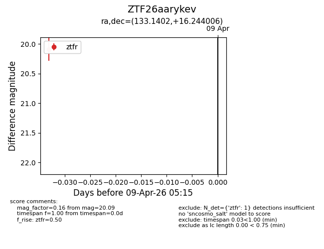
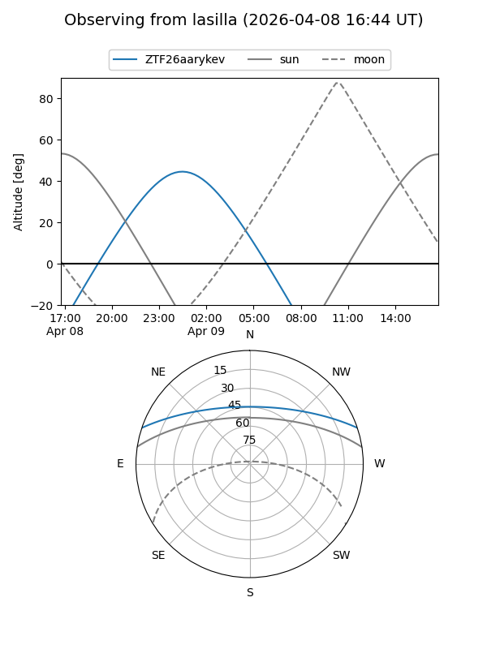
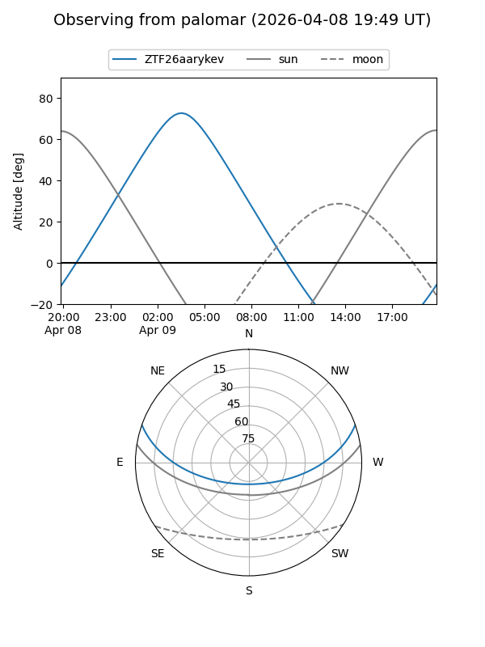

ZTF26aarykev
Target ZTF26aarykev at 2026-04-09 05:21
Aliases and brokers:
FINK: link
Lasair: link
ALeRCE: link
alt names
ZTF26aarykev (ztf,fink_ztf)
Coordinates:
equatorial (ra, dec) = 133.1402,+16.24401
equatorial (HMS+DMS) = 08:52:33.64,+16:14:38.42
galactic (l, b) = (210.9832,+33.94531)
Flags:
Photometry:
last ztfr=20.09
1 ztfr detections
Lightcurve

Visibility


Additional plots